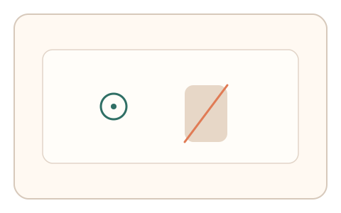
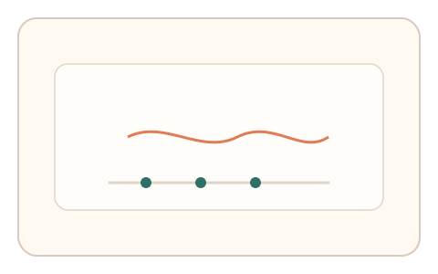

#162
Reverse Brainstorming - Round 2
已扩展
传感器一致性链
结合多传感器信号的时间一致性做判定，并与设备基线比对。
概念原文
结合多传感器信号（如指针微抖+设备姿态微漂移）的时间一致性做判定，并与设备基线比对。
单一环境伪造不再有效，需同步伪造跨传感器一致性。
研究背景
跨传感器一致性需要真实设备协同，脚本难以同步伪造。通过时间对齐与相位一致性可提升抗攻击性。
核心机制
- 采集指针微抖与姿态微漂移等多源信号。
- 进行时间对齐与相位比较。
- 计算跨传感器一致性得分。
- 与设备基线分布比对。
用户流程
- 步骤 1：用户完成短交互并产生多源信号。
- 步骤 2：系统对齐并分析一致性。
- 步骤 3：系统输出一致性判定。
判定信号
跨传感器时间一致性
真实设备信号具有同步结构。
相位偏移与漂移
一致性偏移反映真实在场。
判定逻辑
一致性得分需在基线范围；时间对齐异常或漂移过大判异常。
对抗面
- 伪造单一传感器信号
- 脚本同步生成多通道信号
防御与缓解
- 随机化采样窗口
- 引入难以预测的微扰
- 多通道交叉验证
可达性与风险
对无传感器设备提供替代信号或简化模式。
- 传感器权限受限
- 设备噪声导致一致性下降
可视化状态

状态 1：多传感器采集
采集指针与姿态信号。

状态 2：时间对齐
对齐多通道时间线。

状态 3：一致性判定
计算跨传感器一致性得分。
参考资料
Sensor fusion
说明多传感器一致性与融合。
Inertial measurement unit
说明姿态与运动传感器。